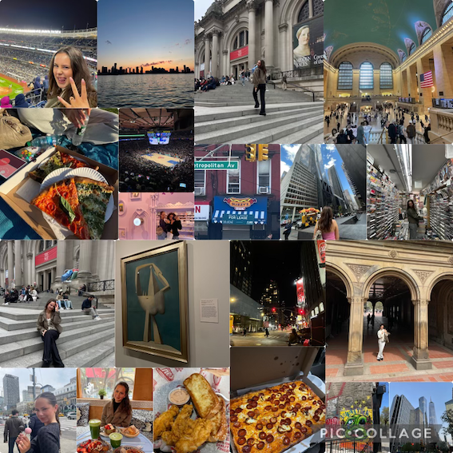
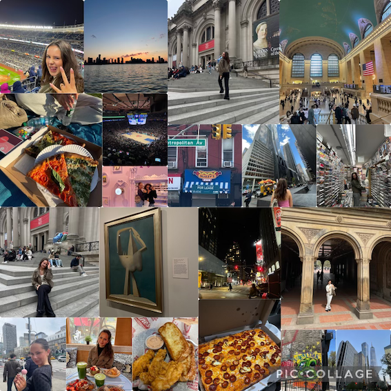

Om mig
Halla<3 Jeg hedder Alma Castillo-Jørgensen. Jeg er 21 år og gået i gang med 1. semester på IT-Arkitektur
Jeg er oprindeligt fra Frederiksberg hvor jeg er opvokset og gået i folkeskole på skolen på nyelandsvej Derefter gik jeg på Gefion Gynasie, hvor jeg efterfølgende havde 2 sabbat år og nu er jeg her
I mine 2 sabbatår har jeg hovedsaligt arbejdet. Både på et apotek og i en bladkiosk. Jeg har også været en del ud og rejse. Min Far er fra spanien så halvdelen af min familie bor dernede, Så jeg prøver at få rejset ned og besøgt dem mest en gang om året. Derudover elsker min Familie og stå på ski, vi har en hytte i norge hvor vi elsker at tage op for at stå på ski Jeg har også rejst til London og Italien, men den rejse der har betydet allermest for mig er min tur til New York med min bedste veninde therese. Det var en tur jeg havde drømt om siden jeg var lille, vi var der kun i 2 uger så vi kunne ikke nå at se alt vi ville, men vi skal nok vende tilbage Dernede var min highlights helt klart vores shopping dage, vores gossip girl tur hvor vi besøgte steder hvor gossip girl var blevet filmet. Vi var også inde at se Nicks vs Nets og vi var også ude at se Yankees spille. Vi så mange kendte landmærker og vi var både på The Met og på MoMa Derudover spiste vi en masse pizza og cookies:)
 
